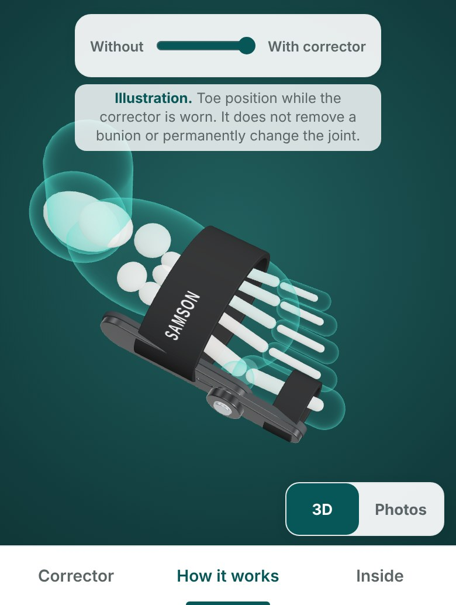

TROOPOD × SAMSON · SAMPLE PRODUCT PAGE
Revamped product page: Samson Bunion Corrector
6 changes, each answering a question a bunion buyer asks before paying, numbered on the page and explained beside it. Samson's prices are live; Frido and Tynor prices are from their own sites on 24 November 2026.
FREE DELIVERY · CASH ON DELIVERY AVAILABLE

11
Does it work, or is it a hoax?
Changed: the gallery opens on the 3D How it works view. The buyer slides from without to with and watches the hinge hold the big toe while it is worn, next to Samson's own line that it does not remove a bunion.
Why: today the proof is a drawn before and after under Say goodbye to bunion pain, and a video that says Corrects toe alignment, while Samson's own description says it is not a cure. Sample live: purrieie.github.io/samson-revamp/3d
Foot pain / Bunion care
Samson Bunion Corrector, Pair
One for each foot · Universal fit, UK 1 to 11
4.5· 94 reviews
₹699
₹999
30% off
About ₹350 a corrector · inclusive of all taxes
2
Will it help me?
Changed: the reviews that say what changed come first, right under the price: walking feels better, and pressure spreads across the foot.
Why: those two reviews are the sixth and seventh on the page today, behind Great product, Good products, Ok and Nice.
What buyers felt
4.5 out of 5 · 94 reviews
“Pair mein pehenne ke baad walking better lagti hai.”
Rohan Verma · Verified buyer
“Foot par pressure distribute karne mein helpful laga.”
Radhika Jain · Verified buyer
Is it for you?
For adults with discomfort around a bunion, or who want support for the big toe.
For anyone who wants an adjustable hinge, not a simple silicone toe separator.
It will not remove a bunion or permanently change the joint.
Check with a doctor first if you have diabetes, reduced foot sensation, circulation concerns, a skin condition or a recent foot injury.
3
3
Is it for my bunion?
Changed: a For who block in Samson's own words: who it suits, who should check with a doctor first, and what it will not do.
Why: Samson's product data already has all three, and none of it reaches the page. A buyer afraid it will not solve their problem cannot try it and return it either: returns take only unused correctors.
4
How long will it take?
Changed: time and use in one block: it helps while worn, start short and build up, wear it by day while walking and standing, and the fitting video Samson already made.
Why: today wear time is step 6 of a How to use list, and day or night is never said, though Samson's own guide tells buyers to check. The usage video is not linked from the PDP.
How long, and when
Helps while you wear it. It holds the toe in place while worn. It is not a permanent fix.
Start short, then build up. Add time only when it feels comfortable.
By day. Walking, standing and daily activities, in shoes with room for your toes.
How it compares
Prices and return rules on each brand's own site, 24 November 2026.
5
5
Why not Frido or Tynor?
Changed: a three line comparison: what is in the box, the price, and the return rule.
Why: ₹699 buys two correctors, about ₹350 each. Frido sells one for ₹1,899 and Tynor one splint for ₹484, and neither takes returns. Today pair shows only in the quantity box, and nothing sets Samson against what a buyer is comparing.
6
Why Samson?
Changed: who makes it, 20 years of supplying hospitals, doctors and physiotherapists, and a Samson expert one tap away.
Why: the About page says it and the home page FAQ repeats it, but the PDP shows three generic badges, while Tynor's page leads with India's No.1 Doctor Recommended Brand.
Why Samson
Made by Samson Scientifics and Surgicals, Indore
Supplying hospitals, doctors and physiotherapists across India for over 20 years.
1 pair · 2 correctors
₹699